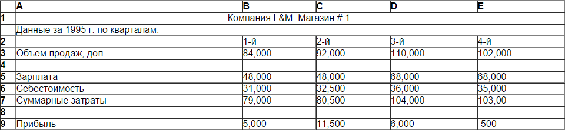
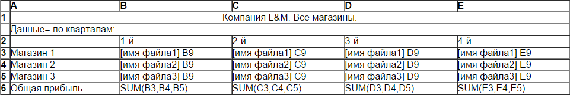
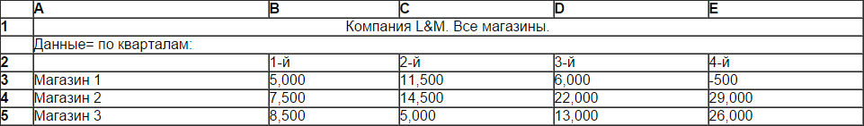

Консолидация электронных таблиц или их частей
Консолидация — это объединение данных из одной или нескольких областей данных и вывод их в виде таблицы в итоговом листе.Объединение электронных таблиц
При работе с электронными таблицами часто возникает необходимость их объединения. Среди инструментов объединения электронных таблиц отметим:Организация межтабличных связей
Связи между таблицами осуществляются путем использования внешних ссылок (адресов ячеек), содержащих помимо имени столбца и номера строки имя файла, данные из которого используются. Так, например, если мы хотим использовать данные из ячейки С2 таблицы, содержащейся в файле Exam. wq1. в нужную нам ячейку текущей таблицы мы можем записать внешнюю ссылку следующим образом: [Exam.wql] C2.Консолидация электронных таблиц или их частей
Помимо создания межтабличных связей путем указания имен файлов, содержащих связываемые таблицы в ссылках и формулах, многие электронные таблицы предлагают пользователю специальный режим консолидации. Этот режим содержит необходимые команды для объединения таблиц или их частей, расположенных как на одном листе, так и на разных листах или даже в разных рабочих книгах. С помощью консолидации могут быть сведены в одной таблице.Команда объединения файлов
Многие современные табличные процессоры имеют в своем арсенале команду объединения файлов. Эта команда имеет три формы, используемые для копирования, суммирования или вычитания данных из исходных таблиц в объединенную таблицу. Технология создания электронной таблицы, объединяющей данные нескольких исходных таблиц, такова: мы создаем электронную таблицу в оперативной памяти и засылаем в нее данные из исходных электронных таблиц, находящихся на жестком (или гибком) диске. Процесс начинается с подготовки шаблона объединенной электронной таблицы.
Для объединения дачных по прибыли из нескольких отчетов, поступающих от различных магазинов, создается объединенный отчет.
В ссылках, находящихся в ячейках этого отчета, указываются имена исходных файлов, содержащих данные о каждом из магазинов. При использовании команды объединения файлов в режиме копирования в результате объединения данных по прибыли из нескольких отчетов, поступающих от различных магазинов, будем иметь объединенный отчет
В ряде случаев полученные в предыдущей таблице данные могут оказаться недостаточными для руководства компании, которое интересуют суммарные данные не только по прибили, но и по продажам и затратам. Здесь используется команда объединения файлов в режиме суммирования, которая обеспечивает иной порядок формирования данных в объединенном отчете. Объединенный отчет (электронная таблица) в этом случае будет формироваться в таком же виде, как и отчеты, получаемые от магазинов, однако содержимое каждой ячейки в нем будет равняться сумме содержимого соответствующих ячеек объединяемых таблиц. Так, например, зарплата в первом квартале в объединенном отчете будет определяться суммой заработной платы во всех магазинах в первом квартале.